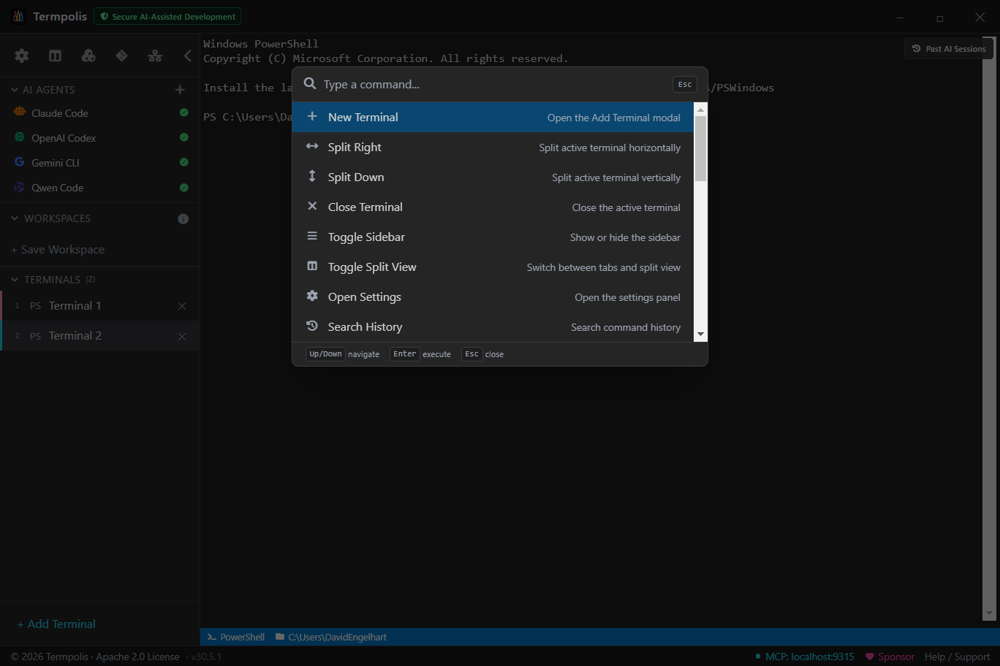
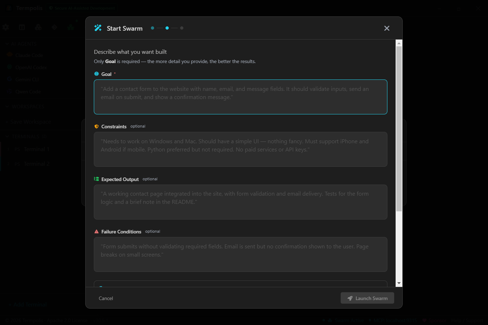
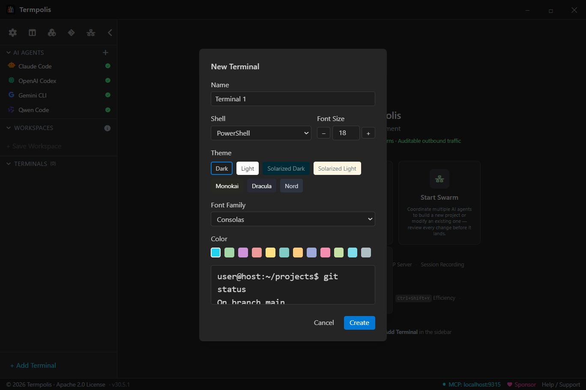
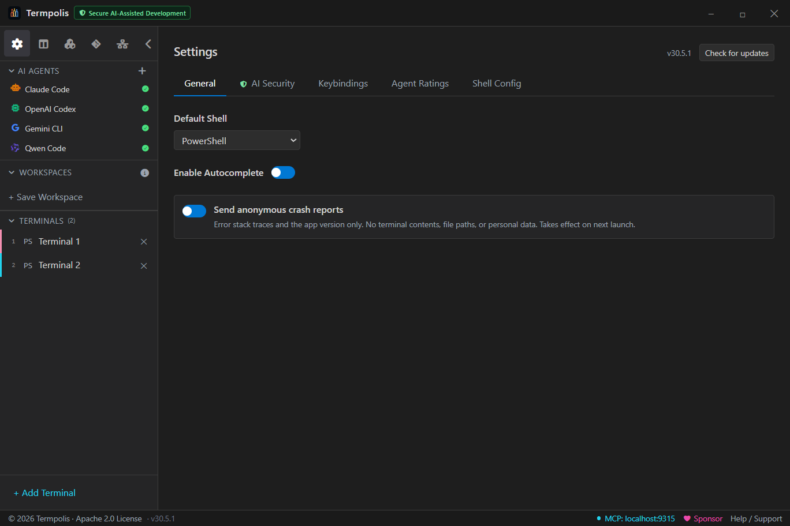

The open-source multi-agent AI terminal
Termpolis
where Claude, Codex, Gemini, and Qwen work as a team
Describe your task. A dedicated Claude Code conductor breaks it into subtasks and dispatches up to five agents in parallel, each picked by capability scores across ten skill categories, with a token-cost forecast you see before anything runs. Agents share a memory store with semantic search, message each other for handoffs, and stream every tool call into a live activity feed. Pause, cancel, or steer any agent mid-run without losing progress. When the swarm finishes, review the diff hunk-by-hunk, run the tests, and accept or reject each change before it lands.
Free forever Termpolis is free and open source, and will always remain free. If it's useful to you, consider sponsoring the project.
- Smart routing: up to 5 agents in parallel, auto-assigned by capability scores across 10 skill categories
- Intervene mid-run: pause, cancel, or redirect any agent. Shared memory keeps context intact
- Hunk-by-hunk review with test gates before anything commits

AI-native features
Built from the ground up for AI coding workflows
Termpolis isn't just a terminal that runs AI tools. It's designed around them. Launch agents with one click, orchestrate swarms, track costs, record sessions, search conversations, and let AI agents control your workspace through MCP.
AI agent profiles
One-click launch for Claude Code, Codex, Gemini CLI, and Aider. Add custom profiles for any AI tool. Each gets its own terminal with the right shell, color, and startup command.
MCP server
Built-in HTTP/SSE server on localhost:9315 with 14 tools. AI agents create terminals, run commands, read output, manage your workspace. Auto-registers with Claude Code.
Context handoff
When an AI agent runs out of context, an amber banner offers to switch to another agent. Your task, git state, recent commands, and diff summary transfer automatically.
Command palette
Ctrl+K opens a natural language command bar. Type "new terminal", "launch claude", "split right". 17 commands, all local pattern matching, no API keys needed.
Prompt templates
Save reusable prompts (Fix Tests, Code Review, Refactor) and insert them into any terminal with Ctrl+Shift+P. Create custom templates for your workflows.
Workflow templates
Pre-built multi-terminal layouts: "Claude + Shell" (2 panes), "Full Stack Dev" (4 panes), "Code Review" (2 panes). One click launches the full split-pane setup.
Agent detection & cost tracking
Automatically detects Claude, Codex, Gemini, or Aider running in a terminal. Shows a colored badge with token usage and estimated cost in the status bar.
Session recording
Record AI coding sessions with timestamps. Export as shareable text logs for documentation, review, or auditing what an agent did.
Output pinning
Pin important output to a persistent panel at the top of the terminal. Stays visible as the terminal scrolls, so AI-generated code stays in view while you test it.
Smart context panel
Ctrl+Shift+E opens a side panel showing file tree, git status, and recent commits. See what the AI agent sees. Refreshes every 5 seconds.
Diff viewer
Detects git diff output and renders it with syntax highlighting: green for additions, red for deletions, file headers, line numbers. Built right in.
Conversation search
Ctrl+Shift+I searches across all AI conversations indexed from terminal output. Find when Claude suggested that migration or Codex wrote that function.
Git panel
Built-in git panel accessible from the sidebar. Stage, unstage, commit, pull, push, view inline diffs, all without leaving Termpolis. Auto-detects repos or pick any folder. Like VS Code's source control but built into your terminal.


Multi-agent swarm
The conductor that knows who plays what
No AI company has built a tool that brings together competing models to work as a team, because it helps their competitors. Termpolis does it anyway, because it moves AI forward. Claude, Codex, Gemini, and Qwen working in harmony on the same project, directed by a live AI conductor.
AI Conductor
A dedicated Claude Code instance runs as the swarm orchestrator. It reads every agent's output in real time, decides what to delegate next, and issues instructions using live AI reasoning, not hard-coded keyword matching. The conductor thinks; the agents execute.
Smart task routing
The orchestrator analyzes your task, breaks it into subtasks (refactoring, testing, docs, review), and assigns each to the best agent based on a customizable capability matrix. Scores are transparent (0-100) with reasons. Token-heavy work routed to cheaper agents. Every assignment can be overridden.
Customizable agent ratings
4 agents scored across 10 categories. Default ratings are estimates based on general model capabilities. Customize them in Settings > Agent Capability Ratings based on your experience. The AI conductor uses ratings as hints but makes its own judgment calls.
Token budget estimates
Before launching, see estimated tokens and cost per agent. Expensive models handle complex work. Free/cheap models handle volume. Total estimated cost shown upfront.
5-step swarm wizard
Pick agents → describe task → review smart-routed assignments → launch → conductor initializes (~30s) and begins delegating. Each agent gets a split pane with their optimized task prompt. The conductor monitors and adapts as work progresses.
Swarm Complete dialog
When the conductor determines all work is done, a summary dialog appears: tasks completed, tasks failed, per-agent results, and a full message log. No manual polling. The conductor signals completion automatically.
Interactive Agent Mode
Gemini runs in interactive mode so it has full tool access during swarm execution, not just output parsing. Each agent runs in its own terminal pane with real shell access.
MCP-native communication
Claude, Codex, and Gemini all connect to Termpolis via MCP natively. 6 swarm tools for inter-agent messaging, task management, and coordination. Aider bridged automatically via terminal output parsing.
Free local option
Aider + Qwen3-Coder runs via Ollama with zero API cost. No cloud, no keys, no telemetry. Auto-detects if Ollama is installed. The open-source AI coding option.
Swarm dashboard
Real-time view: agents with health status, tasks in kanban columns (Pending → In Progress → Completed), and a chronological message log. Ctrl+Shift+S to open.
Context handoff
When an agent hits its token limit, seamlessly switch to another with your full working context. Task, git state, modified files, and diff summary transfer automatically.




Download and code
Install the app or inspect the source
Available for Windows, macOS, and Linux. Apache 2.0 licensed, open source, free.
github.com/codedev-david/termpolis
Explore the codebase, track releases, and contribute.
Browse the repoWindows
NSIS installer with bundled jq, yq, and nano.
Code Signed (SSL.com) Download for Windows* Windows SmartScreen may show a warning for new software. Click "More info" then "Run anyway" to proceed. Termpolis is digitally signed and safe to install.
macOS
DMG with full Unicode support and built-in tools.
Signed & Notarized (Apple) Download for Mac (Apple Silicon) Download for Mac (Intel)Linux
AppImage with bundled CLI tools, ready to run.
Download for LinuxAI observability
See what every agent is doing, in real time
Run five agents at once and the usual problem shows up fast: two of them are doing the same work, one is about to run out of context, and another is quietly burning tokens. Termpolis ships a local observability layer that watches every agent on your machine. No cloud, no external dashboard, bounded memory, 90%+ test coverage.
Activity feed
Ctrl+Shift+A opens a live stream of every agent event: messages, tool calls, tool results, token updates, compaction events, errors, and MCP audit entries. Filter by agent (Claude/Codex/Gemini/Aider), by kind, or search full text. Newest first.
Context gauge
A 0–100% bar in the per-terminal status bar showing how full the agent's context window is. Model aware: Opus, Sonnet, Gemini, and Qwen all have their correct token limits. Color coded green → yellow → orange → red.
Context pins
Pin any snippet to the current project: a migration rule, a test policy, an API contract. Pins are re-injected on agent handoff so the next agent doesn't lose the plot. Per-project storage with full CRUD.
Redundancy detector
Ctrl+Shift+D surfaces duplicate work across terminals. Two agents running npm test at the same
time? Both editing the same file? A severity-ranked finding shows up immediately.
Efficiency panel
Ctrl+Shift+Y aggregates per-agent stats: token totals, cost, error rate, average tool-call duration. Spot when one agent is burning budget while another is cruising.
Event bus
In-process bounded ring buffer (10K events) with rate limiting (500/sec burst) to prevent DoS from a runaway agent. Persisted to JSONL with automatic rotation. 64KB payload cap. Subscriber callbacks are sandboxed so a bad listener can't kill the bus.
Transcript watchers
Native JSONL readers for Claude Code, Codex, Gemini, and Aider. Tail-with-rotation: if the agent rotates its log mid-run, the watcher follows. Path traversal is blocked at the watcher boundary.
Swarm dashboard
Live token burn per agent, tasks in kanban columns, and the full conductor message log. Every panel streams from the same event bus. No polling lag, no duplicated state.
Terminal features
Everything you need in a modern terminal
Split panes
Split any terminal horizontally or vertically with draggable dividers. Nest splits recursively.
7 themes
Dark, Light, Solarized Dark/Light, Monokai, Dracula, Nord. Per-terminal with live preview.
Command autocomplete
VS Code-style dropdown for 20+ tools. Commands, subcommands, flags with descriptions.
AI command suggestions
Type natural language in any terminal, get instant shell commands.
"find large files" becomes find . -type f -size +100M.
"undo last commit" becomes git reset --soft HEAD~1.
30+ patterns, zero latency, no API calls. Tab to accept.
Command auto-fix
Mistype a command? Green banner suggests the correction. Enter to run, Esc to ignore.
Configurable keybindings
18 keyboard shortcuts, all customizable with a recording UI in Settings.
Status bar
Shell type, directory, git branch, AI agent badge, cost tracking. Updates live.
Built-in tools
jq, yq, and nano bundled. Available in every terminal, even if not installed on your system.
Export & drag-drop
Export scrollback to text files. Drag files onto terminals to paste paths. Clickable URLs.


MCP integration
AI agents control your terminal
Termpolis runs an MCP server on localhost:9315 with 14 tools. Claude Code auto-discovers it. Secured with a 256-bit auth token, localhost only, no plugins.
14 MCP tools
Terminal management (list, create, run, read, close) + file tree + git status + 6 swarm coordination tools.
Auto-registers with Claude Code
On launch, Termpolis adds itself as a Claude Code plugin. Zero configuration needed.
CLI tool included
termpolis-cli lets you control Termpolis from any terminal: list, create, run, read, close.
Security hardened
256-bit auth token, localhost only, CORS restricted, no plugins, no telemetry. Atomic file writes.
In action
See Termpolis in action


Workspaces
Save and restore terminal sets
- Save all terminals with names, shells, themes, fonts, colors, and working directories
- Terminals reopen in the same directory they were in when saved
- Session persistence brings everything back on restart
- Single-instance lock prevents session corruption
Claude + Tests
Claude Code on the left, test runner on the right.
Dev Environment
Frontend, backend, database, and AI agent in 4 panes.
Multi-Agent
Claude, Codex, and Gemini collaborating on a task.
Shortcuts
18 keyboard shortcuts, all customizable
Performance & security
Enterprise-grade reliability
590 automated tests
515 unit tests across 62 files (Vitest) + 75 E2E tests (Playwright) with automated screenshots. CI/CD on every release.
Output throttling
64KB per-frame rate limit. 10,000-line scrollback cap. Viewport-aware rendering in split view.
No plugins, by design
Third-party plugins are a security risk. Every feature is built-in, auditable, and ships with the app.
Crash recovery
React ErrorBoundary catches render crashes. Optional Sentry integration. Terminals survive UI errors.
Supported shells
Auto-detects your installed shells
PowerShell 7
Windows, macOS, Linux
Windows PowerShell 5
Windows
Command Prompt
Windows
Git Bash
Windows
Bash (WSL)
Windows
Bash
macOS, Linux
Zsh
macOS, Linux
Support the project
Sponsor Termpolis
Termpolis is free, open source, and Apache 2.0 licensed. Building it (including AI token costs for development) takes time and resources. If you find it useful, please consider sponsoring.
Screenshots
The interface up close